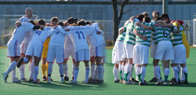
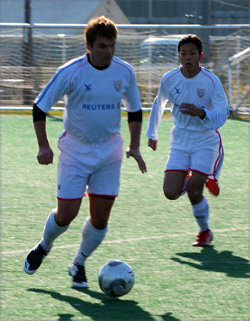
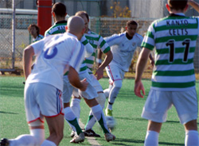

|
Hachioji Park, Saturday 15th December,
Jon's winner for the French against KGFC. Not a sentence I ever imagined writing. I recall a wild-eyed Day going nose to nose with one of the French boys, yelling 'HE'S MY BROTHER!!!' after Rob Day had been launched into the bushes at YCAC. Life was simpler then.
A winner against the Celts would have been nice. It was not to be, however, and a BFC victory here would have been daylight robbery, frankly. Celts, who fielded the strongest line-up this flea-bitten striker can remember them fielding in 10 years of open warfare, were well worth their point.
They should also be commended for not flagging Shosuke Yamagishi's equaliser offside. The Japanese whippet was well onside when he latched on to Evans's cheeky pass but, alas, we have seen the flag shooting up urgent in the past -- proper geeze, proper pants.
Anyway, that display of honesty brought a tear to the eye and evoked images of Maggie, the sinking of the Belgrano (more English perhaps than Irish but heh-ho) and days when a pint of beer cost a pound. Or sumfink. Or nuffink.
Has to be said the Celt's goal was a dog's dinner from BFC's point of view.
Brian Doyle's interception dropping in front of goalkeeper Jason Leonardis, who decided not to dirty his Reuters-financed Chanel gloves, allowing the Celts striker (name eludes me, useful player though. Henry Monahan - ed) to toe-poke the ball into the net.
It should be mentioned that before this clanger Jason had pulled off a pukka last-ditch save as BFC were caught napping (hardly surprising given that alarm clocks had to be set for 0630 for this game).
All under the watchful eye of Doctor Lowes, who has returned from a year of surfing and Socrates in Sydney, looking wind-swept and bronzed (think the old bird off 'There's Something About Mary' with the saggy tits).
PLD
'Phil Lowes Disease' is officially a recognised ailment. Trust me. There was more surrealism in the fact that on the day we appeared to have the antidote, the virus's 'host' was skulking along the touchline, itching to get some action -- and no doubt bring the whole matrix crashing down again.
Gen and Doyle, who if they stood on top of each other would only come up to the belly button of the giant Celts centre-back Libor Helis (for the love of God, LIBOR HELIS!!! -- that's so scary it's ridiculous!!!) were outstanding.
Another oddity of Saturday's game was that Day didn't play a single minute up front with broccoli buddy Al Himmer -- possibly cos the balder and less black of the two had left his Roll-On at home. Maybe.
Result: With no one to poke forks at or chuck business cards or broccoli at with, Himmer did his best Shergar impression for much of the first half before deciding enough was enough and removing himself from the fray. Within 10 minutes it was 1-1. Good finish from Shosuke.
BFC showed more menace in the second half, Day (talking now about joining the Panthers on loan!) still avoiding all contact with Himmer -- I'm not paranoid! I'm not. What you looking at? -- but the final ball was too often lumped from deep or launched harmlessly into surrounding gardens.
Had Czech iron man Libor Helis (that's LIBOR HELIS, for heaven's sake!!!) not shot wide after napalm-blasting the entire BFC line-up into a broken heap, Arnie-style, it could have been a whole lot worse.
GARIBALDIS
On balance the Celts had the more clear-cut chances, though their goal was an absolute starter for 10 -- 'Cup of Darjeeling and a biscuit, boys? We got Garibaldis! Anything else we can do for you?'
A draw was probably a fair result and one that the new TML leaders Hibs will have enjoyed. BFC, as the prophets had predicted, dropped points -- five to be precise -- over their last three games, a defeat by YCAC and this draw in early morning jobs.
BFC have never been good early risers, not since founding father 'El Gordo' Liversidge arrived on Japan's shores on a chariot-type contraption, boots slung over his shoulder by the laces, in the early 1900s. BFC filled this morning slot after the Vags had decided, with logic, 'Bugger 9 a.m. in Saitama for a game of soldiers!'
For those who refused to listen, or heed warnings about how good this year's Celts are -- to wit: 'They're Irish! They'll be in worse shape than us at 9 a.m!' -- let this be a lesson. TML has scheduling issues, as does each team who want to play on good astro, but two points dropped did little to help BFC's hopes for a second straight title.
The ref did well overall and kept a lid on a physical but fair game. Oh, and Day scored the winner for the French. Good God!
Report by Knackered Converse
|